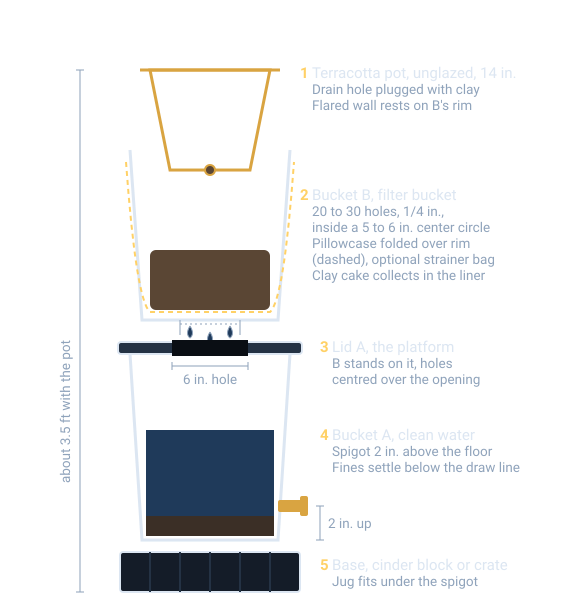
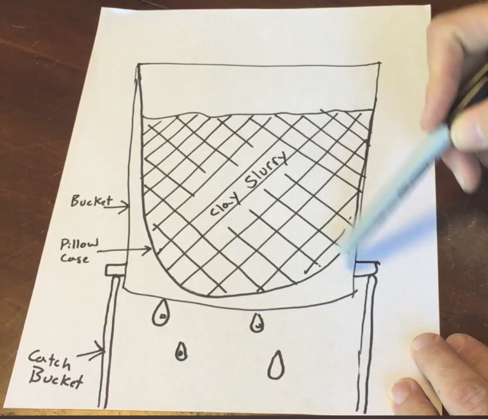
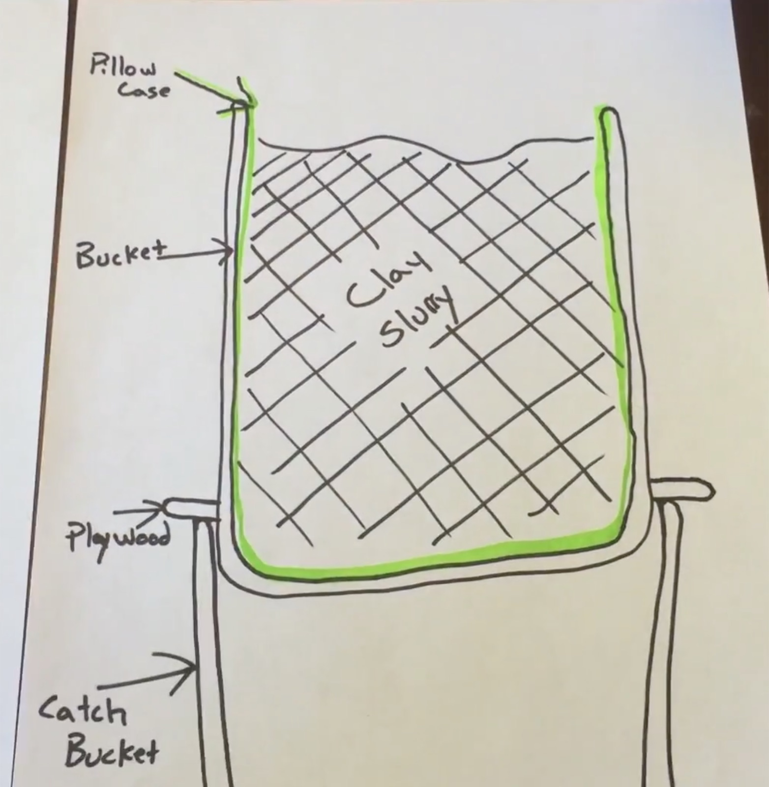

A compact clay reclaim and water filtration system for the studio, built from two 5 gallon buckets stacked entirely vertically so it takes one bucket's footprint. Dirty throwing water goes in the top, clay collects as a filter cake in a pillowcase, and clear water comes out of a spigot at the bottom to go back into the throwing bucket. Nothing from this system goes down a drain.
Earlier versions of this idea: a two-tier bucket filter with a sink drain and a rain barrel spigot (March 2026, the sketches below are from that note, which also floated a car wash grit-trap insert to hold an air gap under the liner), then a three-tote settling cascade that swapped plaster for a hanging pillowcase and then for terracotta dewatering (July 2026). This page combines them into one stack.

Cross section, not to scale; numbers match the tiers below. Flow: dirty water into B, the clay cake stays in the liner, water drips through the lid hole into A, clean water out the spigot. Bucket and pot sizes are nominal, so measure your own before cutting the lid hole.Total height with the pot is roughly 3.5 ft. Place it where it cannot get bumped, since a full top bucket is heavy.
| Part | Copy/paste name | Qty | Notes |
|---|---|---|---|
| Bucket | Leaktite 5 Gallon Bucket |
2 | A is the reservoir, B is the filter bucket. |
| Lid | Leaktite 5 Gallon Bucket Lid |
2 | One for A with the 6 inch hole, one to cover B. |
| Spigot | Renator Brass Rain Barrel Spigot Kit |
1 | Or any rain barrel spigot kit with bulkhead fitting. Mounts 2 inches up from the bottom of A. |
| Filter liner | 100% cotton pillowcases standard size white |
2 to 3 | Tight weave. No poly blend, no jersey knit. Spares so one is always dry. |
| Support liner (optional) | 5 gallon paint strainer bags fine mesh |
1 | Goes in before the pillowcase. |
| Dewatering pot (optional) | unglazed terracotta pot 14 inch |
1 | Raw inside and out. No sealer or paint. |
| Sealant | silicone sealant clear waterproof |
1 | Around the spigot bulkhead. |
1/4 inch bit for the drain holes in B.Hole saw matching the spigot kit's bulkhead size.The two drawings from the March note. Both show the pillowcase tier over a catch bucket, before the platform lid replaced the plywood.

Pillowcase liner in the top bucket, drips into the catch bucket.
Pillowcase folded over the rim, top bucket on a plywood platform. The 6 inch lid hole does the plywood's job in the stack above.Note: reference photos go in
data/pottery/img/reclaim-stack/in the site repo, then oneline per photo here, thennpm run build:pottery. Wanted, by category: stacked bucket filters with spigots in a pottery studio; a pillowcase draining clay slurry; a paint strainer bag in a 5 gallon bucket; a spigot mounted low on a 5 gallon bucket; terracotta reclaim (weak examples so far).
Reference links:
easiest clay water filtration system for pottery studios, 2 bucket method for water waste pottery to the people, recycling clay with the pillowcase method, terracotta pot clay reclaim